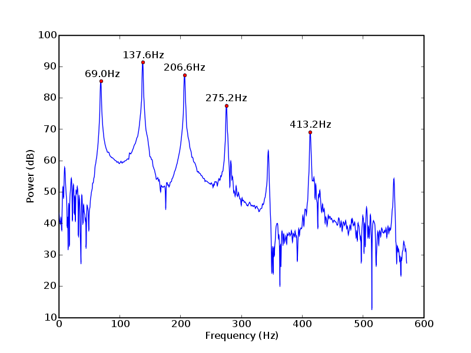
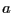
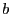
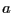
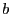

Recordings of the chosen notes are made and edited to include only the primary pipe speech, excluding the initial attack and final release of the note where other effects occur (Figure 1). The power spectral density (PSD) of each recording is estimated (e.g., using Welch's method [2], Figure 2). A PSD function determines the power distribution of a signal in the frequency domain. This allows determination of the power of the signal at discrete frequencies. The  (an arbitrary number chosen by the user) largest peaks in each distribution are found by searching for three consecutive points where the middle point has greater value than both surrounding points (Figure 2). The percentage power contribution of each peak is found by dividing the power of the peak by the total power of the distribution. Finally, the expected base frequency is recorded as the closest frequency to it that is also one of the
(an arbitrary number chosen by the user) largest peaks in each distribution are found by searching for three consecutive points where the middle point has greater value than both surrounding points (Figure 2). The percentage power contribution of each peak is found by dividing the power of the peak by the total power of the distribution. Finally, the expected base frequency is recorded as the closest frequency to it that is also one of the  peaks. The exact base frequency cannot be used because the PSD function produces a list of discrete frequencies. Furthermore, the number of peaks is chosen so that there is a close match (within 2Hz, generally). This is generally not an issue because the base frequency is almost always one of the first two peaks.
peaks. The exact base frequency cannot be used because the PSD function produces a list of discrete frequencies. Furthermore, the number of peaks is chosen so that there is a close match (within 2Hz, generally). This is generally not an issue because the base frequency is almost always one of the first two peaks.
|

|
At this point processing on individual recordings is complete, and they can now be processed as a set. The first peak power contribution of each recording is taken, along with that recording's base frequency. A least-squares polynomial fit algorithm is applied where the base frequency ( ) is the independent variable and the peak power contribution corresponding to that base frequency (
) is the independent variable and the peak power contribution corresponding to that base frequency ( ) is the dependent variable. Third-degree polynomials tend to produce good results. This procedure is repeated for all of the other
) is the dependent variable. Third-degree polynomials tend to produce good results. This procedure is repeated for all of the other  peaks so that the polynomial fit algorithm is applied to all of the second, third, etc. peak power contributions up to
peaks so that the polynomial fit algorithm is applied to all of the second, third, etc. peak power contributions up to  . These algorithms generate coefficients , , and
. These algorithms generate coefficients , , and  for the simple polynomial
for the simple polynomial